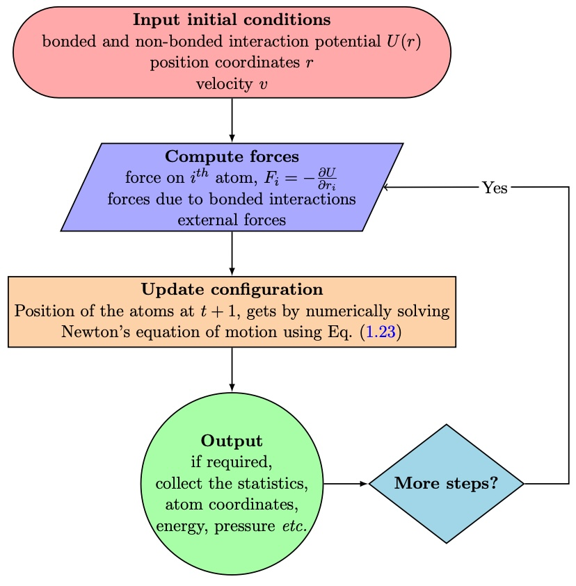
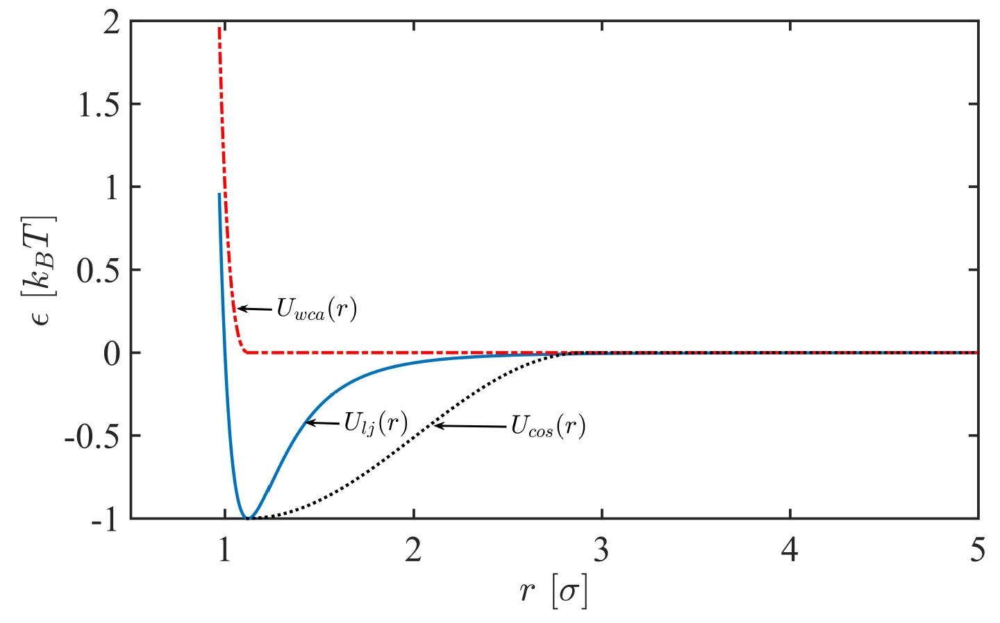

A Brief Overview of Molecular Dynamics Simulations#
This chapter provides an overview of the essential components required for conducting molecular dynamics simulations, with a specific focus on macromolecular systems. We explore the structure of intermolecular potentials for atomically composed or coarse grained molecules and (if possible we go after sytems consisting of non-spherical, sub-units), illustrating methods for computing forces and torques. Additionally, we discuss several widely used molecular dynamics algorithms. Lastly, we touch upon factors influencing the scale of systems and duration of simulations necessary for computing statistical properties.
Primary Ideas of Molecular Dynamics#
Brief Discussion:
Computer simulations play a crucial role in understanding molecular assemblies by revealing their structural properties and microscopic interactions. They complement conventional experiments by offering insights that may be otherwise inaccessible. Molecular dynamics (MD) and Monte Carlo (MC) simulations are the main techniques used, with MD being the focus of this lecture due to its ability to predict dynamical properties such as transport coefficients and rheological properties.
Simulations act as a bridge between microscopic and macroscopic scales, providing accurate predictions of bulk properties while revealing hidden details. They also serve as a connection between theory and experiment, enabling testing of theories and models. Additionally, simulations allow exploration of conditions that may be difficult or impossible to replicate in the laboratory.
Key Ideas:
- Role of Simulations: Simulations complement experiments by providing insights into molecular assemblies that may not be accessible experimentally.
- Main Simulation Techniques: Molecular dynamics (MD) and Monte Carlo (MC) are the primary simulation techniques (there are other techniques such as Brownian Dynamics, Dissipative Particle Dynamics, Multiparticle Collision Dynamics, and Lattice Boltzmann, among others), with MD focusing on dynamical properties.
- Bridge between Scales: Simulations bridge the gap between microscopic and macroscopic scales, offering accurate predictions of bulk properties while revealing hidden details.
- Connection between Theory and Experiment: Simulations enable testing of theories and models, as well as comparisons with experimental results.
- Exploration of Conditions: Simulations allow exploration of conditions that may be difficult or impossible to replicate in the laboratory.
- Importance of Molecular Models: Accurate molecular models are essential for making direct comparisons with experimental measurements, but models containing essential physics may suffice for certain aims.
Molecular Dynamics: Molecular dynamics (MD) is a widely employed computational technique to compute the equilibrium, dynamical, and transport properties of classical many-body systems. As the quantum effects are neglected for heavier molecules and atoms, the motion of the constituent particles follows laws of classical mechanics obeying the Newtonian equations of motion. For classical many-body systems, the average kinetic energy per degree of freedom is related to the thermal energy via equipartition theorem, \(\langle \frac{1}{2}mv_i^2\rangle =\frac{1}{2}k_B T\). The trajectory of individual particles from the MD can be obtained by solving Newton’s second laws of motion,
where force \(\mathbf{F}_i\) acting on particle \(i\), and \(t\) denotes the time. By numerically solving Newton’s equation of motion (using e.g. velocity-verlet algorithm), one computes the position of every particle after a given time step. In standard MD simulation, typical timesteps \(\sim 10^{-15}\)s (however, vary by the requirements of the system property) compared to the real time scale. A simplified flowchart of a typical MD simulation is shown in the Fig. Flowchart.

Once the system acquires an equilibrium state, the total potential energy is independent of subsequent iterations. If the system is at equilibrium state, i.e. time evolution is equivalent to the configuration, as the thermodynamics state is considered to be ergodic. Since the positions, velocities are known, one can calculate pair correlation distributions, structure factor, which are essentially calculated by taking an average of over different realisations. In order to get a statistical average of a system with a thermally excited state to reach equilibrium state by dynamical phase transitions, needs to average over different configurations emerge from different initial states. A major problem sometimes arises in MD simulations, while small numerical errors arise from the numerical integration of the equation of motion. Which could piles up over many steps and invoke the kinetic energy, hence change the average temperature. This temperature drift can be circumvented by occasionally rescaling the velocity of the particles.
Thermostats#
Distinct types of ensembles arise from various macroscopic environmental constraints related to specific statistical properties.
Langevin Thermostat: Adds a stochastic force to the equations of motion to mimic the effect of a heat bath. It maintains a constant temperature by balancing the energy exchange between the system and the surrounding heat bath.
Berendsen Thermostat: Scales the velocities of particles to achieve the desired temperature. It’s simpler than the Langevin thermostat but can lead to nonphysical behavior in some cases.
Nosé-Hoover Thermostat: Introduces additional degrees of freedom to the system to control its temperature. It adjusts the particle velocities to match the desired temperature while conserving energy.
Anderson Thermostat: Randomly rescales particle velocities to control the temperature. It’s computationally efficient but may not accurately model the dynamics of real systems due to the abrupt velocity changes.
Velocity Rescaling: Directly rescales the velocities of particles to achieve the desired temperature. It’s straightforward but may lead to energy drift over long simulation times.
NVT (Canonical ensemble) & NVE (microcanonical ensemble) :
Description: In the canonical ensemble, the number of particles (N), volume (V), and temperature (T) are fixed.
Thermostat: Berendsen thermostat, Langevin thermostat, Nosé-Hoover thermostat, Velocity rescaling thermostat.
NPT (Isothermal-isobaric ensemble):
Description: In the isothermal-isobaric ensemble, the number of particles (N), pressure (P), and temperature (T) are fixed.
Thermostat: Nosé-Hoover thermostat (coupled with Parrinello-Rahman barostat), Martyna-Tobias-Klein (MTK) thermostat (coupled with Parrinello-Rahman barostat), Parrinello-Rahman barostat.
Note
Typically, canonical NVT or isothermal-isobaric NPT ensembles are employed to compare systems with experimental data. In scenarios where the system interacts with a heat bath, the NVT ensemble proves beneficial. The Nosé-Hoover thermostat offers a deterministic algorithm for simulating a system within the constant temperature NVT ensemble. An additional fictitious dynamic variable, friction (\(\zeta\)), is introduced to accelerate or decelerate until the temperature matches the heat bath temperature \(T\). Thus, the equations of motion are:
Here, \(Q\) denotes the mass determining the relaxation of friction dynamics, \(\zeta(t)\). Notably, in steady state (\(\frac{d\zeta}{dt}=0\)), kinetic energy follows equipartition \(\frac{3N+1}{2}k_B T\) (with an additional degree of freedom from \(\zeta\)), and \(T\) tends toward the specified value, although it is not fixed.
In our MD simulation, we employ a canonical (\(NVT\)) ensemble that integrates time on non-Hamiltonian equations of motion in the Nos’e-Hoover style, designed to generate positions and velocities of each particle.
Interaction Potentials#
We primarily focus on coarse-grained molecular dynamics simulations of the Kremer-Grest bead-spring polymer model. Nature of the nonbonded interactions may distinguished the distinct nature of the polymer chain or monomaric solvent. Depending on the system, inter-atomic non-bonded soft attractive Lennard-Jones potential or truncated LJ (WCA) potential is utilized to impose good or bad solvent conditions.
where \(\sigma\) is the bead diameter and \(\epsilon\) is the well depth. Another typical example to set up the CG three beads membrane, one may utilize a modified attractive potential well to mimic hydrophobic interactions. Therefore, the membrane assembles within a range of well depth and width \(w_c\) parameters, given by:
If electrostatic charges are present, we add the appropriate Coulomb potentials:
where \(Q_1,Q_2\) are the charges and \(\epsilon_0\) is the permittivity of free space. 
Periodic Boundary Conditions#
Due to limitations in system size and the number of degrees of freedom in computer simulations, periodic boundary conditions (PBC) are often implemented. PBC set boundaries allowing particles to interact across the barrier, exiting and re-entering the box. They are crucial for representing an indefinite bulk around the model system. Without PBC, interfacial and finite-size effects introduce significant errors, dominating system behavior. In certain scenarios where studying confinement effects is essential, relactive or repulsive boundary conditions are considered.
How Long & How Large MD should run?#
Molecular dynamics involves the incremental evolution of molecular configurations through time in discrete steps \(\delta t\).
Time steps typically \(\delta t \approx 0.001 - 0.005\) in LJ unit, 10fs in real units.
Note
Units: unit style There are three basic units distance:\(\sigma\), mass: \(m\), energy: \(\epsilon\), time: \(\tau = \sqrt{m\sigma^2/\epsilon}\)
units lj or real or metal or si or cgs or electron or micro or nano
Equilibrium attainment in simulations must be confirmed (ergodic) before relying on calculated averages.
The optimal duration of simulation runs depends on the characteristics of the system and the relevant physical properties.
Simulation durations are typically short, spanning \(10^3\) to \(10^6\) (sometimes more than that \(\sim 10^9\) depending on objectives) MD steps, equivalent to a few nanoseconds of real time, and occasionally extending to microseconds.
Tip
Equilibrium attainment in simulations must be confirmed (ergodic) before relying on calculated averages.
The optimal duration of simulation runs depends on the characteristics of the system and the relevant physical properties.
Simulation Box Sizes (\(L\)) and Simulation Run Lengths (\(\tau\)):
It is crucial for simulation box sizes (\(L\)) to be significantly larger than the characteristic length scale \(\zeta_a\).
Similarly, simulation run lengths \(\tau\) should be much larger than the characteristic time scale \(\tau_a\) for all properties of interest \(a\).
Statistical Error in Property Calculation:
The statistical error in a property calculated as an average over a simulation run of length \(\tau\) is proportional to \(\tau_a\)/\(\tau\).
The time average is essentially a sum of approximately \(\tau\)/\(\tau_a\) independent quantities, each an average over time \(\tau\)a.
Within time periods \(\tau_a\), values of the property are highly correlated.
Spatial Averages Over Simulation Box Volume (\(L^3\)):
Properties which are effectively spatial averages over the simulation box volume ( \(L^3\) ) exhibit root-mean-square variations proportional to \(\sqrt{(\zeta_a/L)^3}\).
Collective, system-wide properties deviate by only a relatively small amount from their thermodynamic, large-system, limiting values.
The deviation becomes smaller as the averaging volume increases and is determined by the correlation length.